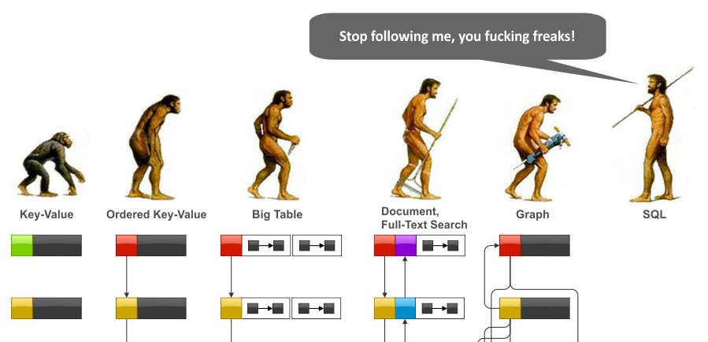
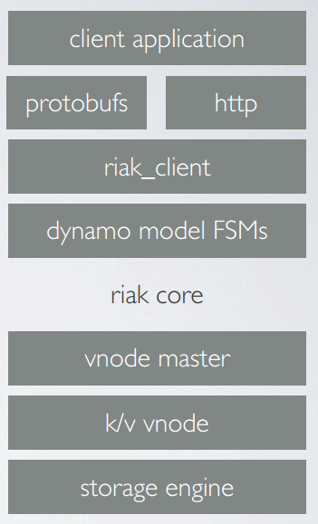

NoSQL with Riak
NoSQL = Not only SQL
Need for NoSQL
- Petabytes of data
- Lots of writes
- Low latency reads
- Unstructured data
- Horizontal scalability
- Availability
Data perspective

NoSQL database types (1)
- Graph database
- Neo4j, OrientDB, FlockDB (Scala)
- Document store
- CouchDB, MongoDB, SimpleDB
- Column-family store
- Big data, e.g. Cassandra, HBase
- Key-value store
- In memory, e.g. Redis, Hazelcast, memcached
- In cloud, e.g. Amazon DynamoDB and SimpleDB
- On disk, e.g. LevelDB, MemcachDB, MongoDB, Riak
NoSQL database types (3)
NoSQL and CAP

NoSQL and ACID
ACID
- Atomicity - a transaction is all or nothing
- Consistency - only valid data is written to the database
- Isolation - pretend all transactions are happening serially and the data is correct
- Durability - what you write is what you get
becomes BASE
- Basically Available - system seems to work all the time
- Soft State - it doesn't have to be consistent all the time
- Eventually Consistent - becomes consistent at some later time
German facts
The offical longest word in german: Rindfleischetikettierungsüberwachungsaufgaben-
übertragungsgesetz
(RflEttÜAÜG)
Translation: beef labeling supervision delegation law
Riak
- NoSQL database
- Key-value store in form of buckets
- Stores data by content-type
- Written in Erlang
- Multiple client libs, e.g. Java, Ruby, Erlang, Python
- Can be used via HTTP and ProtocolBuffers
- Consistent ring hashing
- Vektor clocks
- Used in production by Github, Yammer, Klarna, Hitta.se, DISQUS and many more
Ring hashing

Data replication

Virtual nodes
A vnode
- is a virtual node, as opposed to physical node
- is responsible for one partition on the ring
- is an Erlang process (generic finite state machine)
- handles incoming requests
- potentially stores data to be retrieved later
- is the unit of concurrency, replication, and fault tolerance
- typically runs with other vnodes on a physical hardware node
- is attached to a vnode master (one per machine) who's purpose is to keep track of all active vnodes on it's node
Vector clocks

Handles the order of events, but does not resolve potential conflicts
Riak stack
Get Riak
Install
$ sudo apt-get install libssl0.9.8
$ wget http://downloads.basho.com.s3-website-us-east-1.amazonaws.com/riak/CURRENT/ubuntu/lucid/riak_1.2.0-1_amd64.deb
$ sudo dpkg -i riak_1.2.0-1_amd64.deb
Start
$ sudo service riak start
Read operations (r)
All CRUD operations can be executed via HTTP
// show all known buckets GET /buckets?buckets=true // show keys GET /buckets/users/keys?keys=true // show bucket entry GET /buckets/users/keys/timo.hillerns@jayway.com // show bucket properties GET /buckets/users/prop
Rekon
Previous admin interface to Riak, will be merge into new Riak Control. Installation:
$ curl -s rekon.basho.com | sh
Write operations (w)
// insert some data
$ curl -v -X PUT -d 'this is some text' -H "Content-Type: text/plain" http://192.168.100.14:8098/riak/test/text?returnbody=true
// override data
$ curl -v -X PUT -d 'this is awesome' -H "Content-Type: text/plain" http://192.168.100.14:8098/riak/test/text
// allow multiple version
// add more
$ curl -v -X PUT -d 'this is more awesome, true story' -H "Content-Type: text/plain" http://192.168.100.14:8098/riak/test/text
// drop
$ curl -v -X DELETE http://192.168.100.14:8098/riak/test/text
Riak cluster
Simple cluster setup
// join another node
$ sudo riak-admin cluster join <node>
// show ring status
$ sudo riak-admin ringready
// show cluster membership
$ sudo riak-admin member-status
// review cluster plan (required)
$ sudo riak-admin cluster plan
// commit cluster changes
$ sudo riak-admin cluster commit
// show active traffic
$ sudo riak-admin transfers
// leave the cluster
$ sudo riak-admin cluster leave
Riak Control
Admin interface to Riak
GoGerman facts
The per head consumption of beer in Germany: 110 liters per person and year, 155 in bavaria
In Sweden: 56 liters
Java client config
public class ConfigurationProvider implements Provider<Configuration< {
@Override
public Configuration get() {
// PB = protocol buffers
PBClusterConfig riakClusterConfig = new PBClusterConfig(20);
// See above examples for client config options
PBClientConfig riakClientConfig = PBClientConfig.defaults();
// cluster config
riakClusterConfig.addHosts(riakClientConfig, "192.168.100.14","192.168.100.13");
return riakClusterConfig;
}
}
Failover
// stop a node 192.168.100.13 $ sudo riak stop // add data to 192.168.100.14 $ curl -v -X PUT -d 'this is great' -H "Content-Type: text/plain" http://192.168.100.14:8098/riak/test/text1 $ curl -v -X PUT -d 'more and more' -H "Content-Type: text/plain" http://192.168.100.14:8098/riak/test/text2 $ curl -v -X PUT -d 'enough' -H "Content-Type: text/plain" http://192.168.100.14:8098/riak/test/text3 // restart 192.168.100.13 $ sudo riak start // show keys on 192.168.100.13 GET /buckets/test/keys?keys=true
Riaknostic
Install
$ wget https://github.com/basho/riaknostic/downloads/riaknostic-1.0.2.tar.gz -P /tmp
$ cd /usr/lib/riak/lib
$ sudo tar xzvf /tmp/riaknostic-1.0.2.tar.gz
Usage
$ sudo riak-admin diag
Riak read repair
// compile the code
$ erlc -o /tmp /tmp/bucket_inspector.erl
// attach to Riak Erlang process
$ riak attach
// add path to process
> code:add_path("/tmp").
// module
> m(bucket_inspector).
// read all items in bucket
> bucket_inspector:inspect(<<"bucket">>, 'riak@192.168.100.14').
More features
- MapReduce (written in JavaScript)
- Data linking and link traversing (similiar to graphs)
- Secondary indexes and search
- Commit hooks
Riak use cases
- Session Storage
- User Data storage
- S3-like services
- Cloud infrastructure
- Scalable, low-latency storage for mobile apps
- Critical Data Storage and Disaster Proof Medical Data (see Denmark Healthcare use case)
- Building Block for custom-built distributed systems
Riak - Pros (1)
- Masterless, all nodes are equal (in contrast to e.g. MongoDB)
- No single point of failure
- Fast and stable
- Good internal cache (usually no caching layer required)
- Default replication (Quorum)
- Lots of settings for fine tuning (R, W)
- Easy installation
- Cluster staging (plan, commit)
- Nice administration tools (e.g. Rekon)
- Flexible backend (Bitcask, LevelDB)
Riak - Pros (2)
- Really good documentation
- Easy backup and restore
- Secondary indexes
- Map/reduce facility
- ProtocolBuffers
- Painless upgrade
- Professional support
- Amazon S3 connector
- Open Source, Apache 2.0 license
Riak - Cons
- Not performant key querying (in progress)
- Performance on small VM (not recommended)
- Read repair may not what you expect
- Phonetically close to 'risk' for web search
German facts
The most common name in Germany is